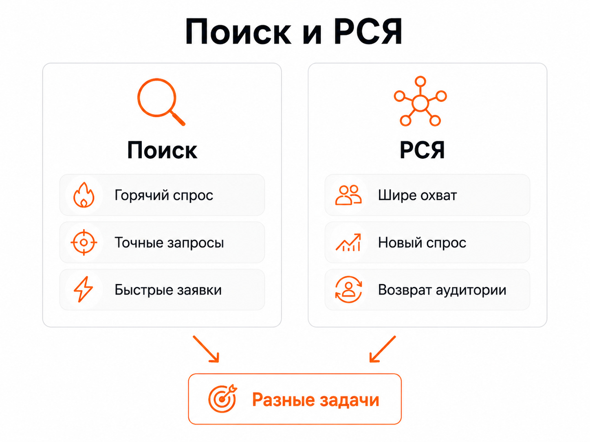
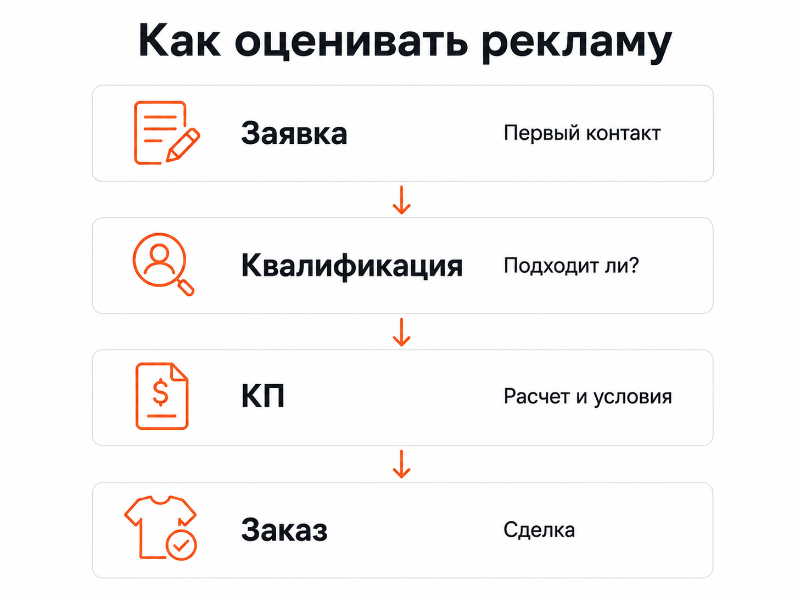

Блог о платном трафике
Реклама производства одежды: как привлекать B2B-заказы на пошив и опт
Реклама производства одежды работает лучше, когда сначала разделены разные типы клиентов. Бренд, которому нужен подрядчик для пошива новой коллекции, и предприниматель, который хочет купить готовую одежду оптом, формально относятся к одной аудитории. Но ищут они разные услуги, сравнивают предложения по разным критериям и по-разному реагируют на рекламу.
Поэтому я бы не запускал одну общую кампанию на все швейное производство. Для каждого направления нужна своя связка: спрос, объявление, посадочная страница и целевое действие.
На практике это особенно заметно в Яндекс Директе. В одном моем проекте по организации швейного производства основной результат давал Поиск, а в проекте фабрики детской одежды большую часть недорогих заявок принесла РСЯ. Универсального канала для всей ниши нет.
Сначала разделите, что именно вы рекламируете
У производства одежды может быть несколько совершенно разных направлений:
- контрактный пошив;
- производство одежды под брендом заказчика;
- пошив партий по готовым лекалам;
- разработка коллекции с последующим производством;
- изготовление корпоративной одежды или мерча;
- продажа готовой продукции оптом;
- поиск дилеров и магазинов;
- пошив отдельных категорий: детской одежды, трикотажа, верхней одежды, спортивной формы и т. д.
Объединять их одной рекламной кампанией имеет смысл только тогда, когда аудитория, условия заказа и посадочная страница практически не отличаются.
Например, запрос «пошив одежды оптом» говорит о поиске производственного подрядчика. Запросы вокруг готовой одежды оптом относятся уже к другой модели продаж. Если вести обе аудитории на одну страницу с общим рассказом о фабрике, часть пользователей просто не увидит предложение, которое искала.
В моем кейсе «Фабрика детской одежды» эти направления были разделены сразу. Отдельный лендинг сделали для пошива детской одежды под заказ, отдельный - для продажи готовой продукции оптом. Это позволило отдельно рекламировать каждое предложение и видеть его реальную экономику.

Кто является клиентом швейного производства
До запуска рекламы нужно определить не абстрактную «целевую аудиторию», а конкретного покупателя.
Для контрактного производства это могут быть:
- начинающие и действующие бренды одежды;
- продавцы на маркетплейсах;
- интернет-магазины;
- компании, выпускающие собственный мерч;
- корпоративные заказчики;
- дизайнеры;
- оптовики;
- предприниматели, запускающие новую коллекцию.
У каждого сегмента свои требования.
Одному нужен полный цикл от идеи и лекал до готовой партии. Другой уже предоставляет техническое задание и ищет только производственную площадку. Третий выбирает фабрику исключительно по минимальной партии, срокам и возможности регулярно повторять тираж.
Чем точнее это отражено в рекламе и на сайте, тем меньше обращений от людей, которым производство заведомо не подходит.
Что показывать на сайте производства одежды
Для B2B-рекламы недостаточно написать «качественный пошив по выгодным ценам».
Потенциальному заказчику нужно быстро понять условия работы.
На посадочной странице я бы показывал:
- какие виды одежды производятся;
- работает ли фабрика с готовыми лекалами;
- можно ли разработать изделие с нуля;
- минимальный размер партии;
- какие ткани и материалы используются;
- какие этапы производства компания берет на себя;
- географию работы и доставки;
- реальные фотографии цеха;
- фотографии готовых изделий;
- примеры выполненных заказов;
- порядок получения расчета;
- контакты и короткую форму заявки.
Если есть существенные ограничения, их лучше сообщить сразу.
Например, если производство принимает заказы только от 300 единиц, не нужно скрывать это до разговора с менеджером. Реклама может привлечь больше заявок без этой информации, но значительная часть окажется бесполезной.
Для производственного бизнеса количество лидов само по себе ничего не говорит о качестве рекламы.
Яндекс Директ для производства одежды
Яндекс Директ позволяет работать как со сформированным спросом, так и с аудиторией, которая потенциально интересуется запуском или размещением производства.
Я обычно отдельно рассматриваю Поиск и РСЯ.
Поиск
Поисковая реклама работает с пользователями, которые уже сформулировали задачу.
Например:
- производство одежды на заказ;
- пошив одежды оптом;
- швейное производство;
- фабрика одежды;
- контрактный пошив;
- пошив одежды для бренда;
- производство одежды под своим брендом.
Это горячий B2B-спрос. Человек уже ищет фабрику или подрядчика и сравнивает предложения.
Но внутри подобных запросов много примесей. Можно получить трафик по ремонту одежды, вакансиям швей, обучению, оборудованию, выкройкам, домашнему пошиву или единичным заказам.
Поэтому после запуска нужно анализировать реальные поисковые запросы и отсекать направления, которые не соответствуют бизнесу.
В моем кейсе «Организация швейного производства» компания помогала предпринимателям и брендам запускать производство одежды под ключ. При ограниченном бюджете основной упор сделали именно на Поиск.
Фактическая стоимость заявки находилась примерно в диапазоне 1500-3000 рублей, а наиболее стабильный поток поисковые кампании давали примерно по 1500 рублей за обращение. Для этого проекта Поиск оказался логичной основой рекламы, потому что клиент уже осознанно искал решение своей задачи.
РСЯ
РСЯ решает другую задачу. Здесь человек не обязательно вводит запрос на пошив прямо сейчас.
Этот формат может использоваться для расширения охвата, возврата посетителей сайта и работы с аудиториями, связанными с нужной тематикой.
Для швейного производства РСЯ не стоит автоматически считать второстепенным каналом.
В проекте фабрики детской одежды получилось наоборот. При рекламном бюджете около $500 в месяц основной объем заявок пришел именно из РСЯ, где стоимость лида составляла примерно $4. Поиск по пошиву одежды давал обращения примерно по $13. Продажа готовой продукции со склада оказалась заметно дороже - около $40 за заявку.
Это хороший пример того, почему нельзя заранее решить, что для любой фабрики «работает только Поиск».
Выбирать нужно по фактическим данным.

Нужно ли делать отдельные рекламные кампании
Разделять кампании стоит не ради красивой структуры рекламного кабинета.
Я разделяю направления, когда различаются:
- тип клиента;
- услуга;
- посадочная страница;
- география;
- размер заказа;
- экономика;
- допустимая стоимость заявки;
- рекламное предложение.
Например, пошив одежды для брендов и продажу собственного ассортимента оптом лучше оценивать отдельно.
Если заявки на контрактное производство обходятся дороже, но регулярно превращаются в крупные заказы, высокая стоимость лида может быть нормальной.
У готовой продукции совершенно другая маржинальность и средний заказ. Смешивание этих данных дает бесполезную среднюю цифру.
Какая реклама чаще приводит нецелевые заявки
Одна из главных проблем этой ниши - трафик выглядит тематическим, но не соответствует реальному производству.
Например, фабрика работает только с бизнесом, а заявку оставляет человек, которому нужно сшить одно платье.
Или производство принимает тираж от 500 единиц, а потенциальному клиенту нужно 20 футболок.
Часть такого спроса можно отсечь еще до клика.
Я бы обязательно отражал в объявлениях и на странице ключевые условия:
- «оптом»;
- «для брендов»;
- «контрактное производство»;
- «партии от ...», если минимальный объем фиксирован;
- конкретные виды продукции;
- регион производства или доставки, если это существенно.
Смысл не в том, чтобы получить максимальный CTR. Иногда более жесткое объявление получает меньше переходов, но экономит деньги на заведомо неподходящей аудитории.
Как оценивать результат рекламы
Для производства одежды я бы не ограничивался показателем CPL.
Нормальная воронка выглядит примерно так:
переход → обращение → квалифицированная заявка → расчет или коммерческое предложение → заказ
Дополнительно можно считать повторные партии, если клиенты возвращаются.
После запуска стоит контролировать:
- количество заявок;
- стоимость обращения;
- долю целевых обращений;
- стоимость квалифицированного лида;
- количество расчетов или коммерческих предложений;
- количество заказов;
- рекламные расходы относительно маржи со сделок.
Это особенно важно в контрактном производстве, где переговоры могут продолжаться значительно дольше, чем в обычной интернет-торговле.
Если рекламный кабинет показывает 20 заявок, но только две соответствуют минимальному тиражу производства, ориентироваться на стоимость всех 20 неправильно.

Почему реклама и отдел продаж должны обмениваться данными
Специалист по трафику видит рекламный источник, запрос, кампанию и факт отправки формы.
Но он не знает, что произошло после заявки, если эта информация остается только у менеджера.
Для оптимизации нужно понимать:
- подходит ли клиент по объему;
- соответствует ли заказ специализации фабрики;
- удалось ли связаться;
- отправлено ли коммерческое предложение;
- состоялась ли сделка;
- какой была сумма заказа.
При достаточном количестве данных часть этих статусов можно использовать в аналитике и передавать обратно в рекламную систему.
Это дает значительно более полезную картину, чем оптимизация исключительно на отправку формы.
SEO для производства одежды
Контекстная реклама дает возможность получать трафик сразу после запуска. SEO работает медленнее, но позволяет постепенно собирать собственный органический спрос.
Для швейного производства можно развивать страницы под реальные направления бизнеса:
- контрактное производство;
- пошив определенных видов одежды;
- производство для брендов;
- оптовые поставки;
- отдельные категории продукции;
- технологии и материалы;
- ответы на вопросы заказчиков;
- реальные кейсы производства.
Рекламные данные здесь тоже полезны. По поисковым кампаниям можно увидеть, какими словами реальные заказчики описывают свои задачи и какие направления чаще приводят целевые обращения.
Это помогает развивать структуру сайта на основании спроса, а не придумывать темы статей и страниц в отрыве от продаж.
Основные ошибки в рекламе производства одежды
Первая ошибка - смешивать разные услуги в одном предложении. Пошив под заказ и продажа готовой одежды требуют разных рекламных связок.
Вторая - скрывать минимальную партию. Это повышает количество обращений, но может резко ухудшить их качество.
Третья - вести трафик на общую корпоративную страницу, где клиенту приходится самостоятельно искать информацию о нужной услуге.
Четвертая - оценивать рекламу только по стоимости первой заявки.
Пятая - не передавать специалисту информацию о качестве лидов.
Шестая - заранее считать какой-либо канал единственно правильным. Даже два близких проекта в швейной нише могут показать противоположные результаты: в одном основным источником становится Поиск, в другом - РСЯ.
Что в итоге
Реклама производства одежды начинается с разделения спроса. Нужно отдельно понимать, кого вы ищете: бренды для контрактного пошива, оптовиков, корпоративных заказчиков или покупателей готовой продукции.
После этого под каждое значимое направление собирается своя связка из рекламы и посадочной страницы.
Для сформированного спроса обычно в первую очередь проверяется Поиск Яндекса. РСЯ позволяет расширять охват и в некоторых проектах способна стать основным источником заявок. Но окончательное решение нужно принимать по стоимости именно квалифицированного лида и сделок, а не по кликам или общей цене формы.
Реальные примеры такой рекламы есть в моих кейсах «Фабрика детской одежды» и «Организация швейного производства».